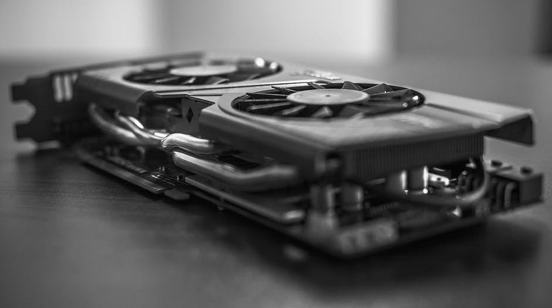

Видеокарта – это устройство, преобразующее изображение, находящееся в памяти компьютера, в видеосигнал для монитора.
Интерфейс — служит для передачи данных между 3D-ускорителем и центральным процессором. В настоящее время стандартом де факто является шина PCI Express (PCI-E) разных версий, хотя пока еще можно встретить устаревший интерфейс AGP.
Тактовая частота видеопроцессора — сильно влияет на производительность видеоадаптера, чем она выше, тем быстрее он работает и тем больше его тепловыделение. Именно поэтому, увеличение рабочей частоты GPU является одним из способов разгона видеокарты. Однако надо иметь в виду, что сравнивать в лоб разные модели видеокарт по данному параметру не совсем правильно, поскольку это будет справедливо только для моделей, построенных на одинаковом чипе, в противном случае в дело вмешивается архитектура чипа. Измеряется частота в мегагерцах.
Частота видеопамяти — измеряется в мегагерцах, и чем она выше, тем быстрее работает подсистема памяти. Так же является одним из способов ускорить работу видеокарты.
Объем видеопамяти — сколько памяти установлено на плате и доступно для хранения данных. В настоящее время измеряется в мегабайтах или гигабайтах и чем ее больше, тем лучше. Однако на самом деле не все так просто, поскольку есть определенный предел, после которого дальнейшее наращивание объема памяти не приводит к увеличению скорости работы. Объясняется это довольно просто, всегда есть определенный объем данных, требуемый для работы. Он разный в каждый момент времени и зависит от используемых программ и настроек. Когда объем памяти установленный в 3D-ускорителе превышает объем данных требуемых для работы, то дальнейшее увеличения объема видеопамяти не приводит к ускорению работы.
Тип видеопамяти — сейчас используется несколько типов оперативной памяти применяющиеся в видеокартах. В современных видеокартах может применяться как DDR так и специально разработанная для использования в видеокартах память типа GDDR. Мы не будем вдаваться в технические моменты, отметим только, что чем более современный тип памяти, тем выше скорость ее работы. Самая быстрая на сегодняшний день это GDDR5, но она и самая дорогая, поэтому применяется в видеокартах верхнего ценового сегмента. Наиболее массовой является GDDR3.
Ширина шины памяти — имеет большое влияние на пропускную способность памяти и следовательно на общую производительность видеокарты. Определяется числом бит данных передаваемых за один цикл. Чем ширина шины памяти больше, тем выше скорость работы. В очень дешевых видеокартах ширина шины обычно 64 или 128 бит, а в топовых 256 бит и выше.